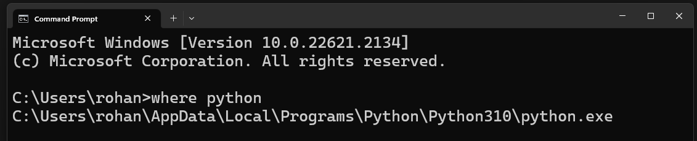
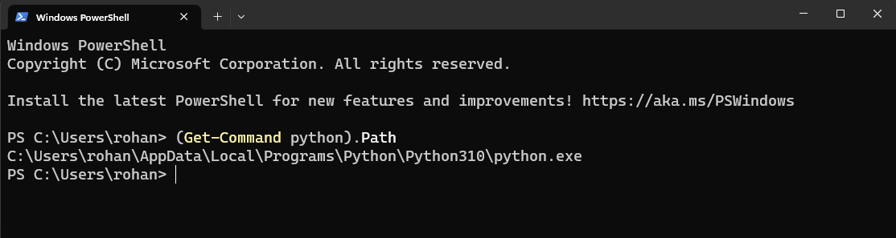

Locating the installation path of Python on your Windows system is essential for various tasks such as setting up environment variables or troubleshooting issues. In this guide, I will show you two methods to help you find the Python installation path, first using the Command Prompt (cmd) and the newer terminal.
This classic method involves utilizing Windows' Command Prompt to find where Python is installed.
Press Win + R to open the run window, type cmd, and press Enter.
In the Command Prompt window, type the following command:
where python
Press Enter, and the system will display the paths where Python is installed.
The terminal is a powerful scripting environment and newer command-line shell, offering a more modern approach to interacting with your system. If you use the terminal, the following steps will help you find where Python is installed!
Follow the steps below:
You can open Terminal by searching for it in the Start menu and selecting "Terminal".
In the Terminal window, type the following command:
(Get-Command python).Path
Press Enter, and Terminal will reveal the paths where Python is installed.
Both the Command Prompt and Terminal methods are effective ways to find the Python installation path on your Windows system. While the Command Prompt is more traditional, Terminal offers a modern and powerful alternative.
Whether you're troubleshooting an issue, setting up an environment variable, or simply curious about your Python installation, these methods provide you with the information you need.
Feel free to drop a comment if you have any questions or require further assistance.
Happy coding!